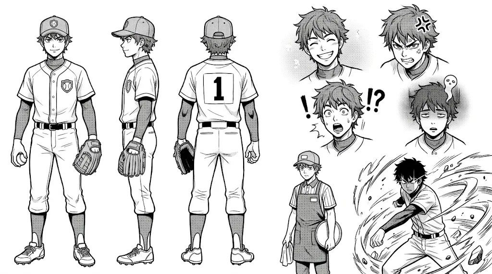

一句話總結：文字類工具（生圖、Canvas、研究、引導式學習）都能直接交件，品質可以用；影音類工具（影片、音樂、語音摘要）這一輪全部沒做出成品，Flow 能上傳素材也知道價錢，但卡在核准按鈕。
4可直接派工
2部分可用
4這輪沒做出來
總表
| 工具 | 誰測 | 結果 | 重點 |
|---|---|---|---|
| 建立圖像（Nano Banana） | Kaz | 成功 | 一次就畫出魔球主角的完整角色設定圖，版面完全照指令。 |
| Canvas | Idn | 成功 | 做出可玩的「認識 JIO 員工小測驗」，實測 10 題跑完、沒有錯誤。 |
| 任務模式研究 | Tidal | 成功 | 自己搜尋、讀原文，交出 6 則附來源的新聞＋3 組四格分鏡。 |
| 引導式學習 | Tidal | 成功 | 注音雙胞胎教學＋10 題題庫，注音與答案逐題核對都正確。 |
| Gem 說明文字 | Idn | 部分 | 規則寫得好，但四位員工的外型是自己編的，要照定裝照改。 |
| Flow | 老闆操作 | 部分 | 能上傳定裝照當素材，一段 8 秒影片 8 點；核准按鈕沒按成功，逾時取消、未扣點。 |
| 建立影片（Veo） | Kaz | 沒做出 | 對話模式送出後整則消失；任務模式回報「沒有掛載影片工具」。 |
| 創作音樂 | Rudy、Tidal | 沒做出 | Rudy 卡住沒回應；Tidal 第一次因提到頻道名稱被拒，第二次額度已滿。 |
| 語音摘要 | Tidal | 沒做出 | 員工回報這個帳號沒有轉語音的功能。 |
| Deep Research | Tidal | 無法使用 | 選單裡是停用狀態，改用任務模式代替，效果接近。 |
各項成果
① 建立圖像：魔球主角角色設定圖
三視圖、四種表情、打工制服版、深夜覺醒版一張到位，白底、沒有亂碼文字。- 可以直接當《時薪三千的唯一魔球》後續話數的角色參考。
- 這次是照文字描述畫的，還沒跟已發表話數的主角長相逐一比對。

② Canvas：認識 JIO 員工小測驗
10 題情境選擇題，答完顯示「你最像哪位 JIO 員工」和四人比例條，手機版排版正常。- Canvas 的程式碼放在獨立視窗裡，要用「匯出 → 下載程式碼」才拿得到完整檔案；請員工改貼在對話裡反而失敗。
③ 任務模式研究：時事四格第 2 期選題
自己跑了十幾次搜尋、讀了 6 篇原文，每則都有日期與來源，查不到的地方會標「尚未確認」。挑出的 3 組分鏡：大同晶圓電鍋、Xbox「遊戲流感」、小米機背 Vibe-Code。- 大同「晶圓電鍋」獲金點設計獎（TechNews）
- 小米 18 Pro 機背小螢幕可 Vibe-Code 小程式（Engadget）
- Xbox 11/19 備戰指南（Xbox Wire）
- 航海家一號抵達 1 光日（EarthSky）
- 河馬 Fiona 誤吞毛線帽（Global News）
- 冥王星外新冰封天體（ScienceDaily）
- 來源由 Tidal 讀取原文確認；做成四格前，時事那一句仍要再點開核對一次。
④ 引導式學習：注音雙胞胎 ㄅ／ㄆ、ㄉ／ㄊ、ㄋ／ㄌ
先講原理（送氣、鼻音、邊音），中間用小問題確認，最後交出給家長的 5 步驟（衛生紙吹吹樂、摸鼻子小偵探…）和 10 題含溫柔提示語的題庫。- 10 題注音拼寫與答案都正確；有 1 個簡體字已修正。
- 這次要求它一次示範完，真正一問一答的家教感還沒測到。
⑤ Gem 說明文字：「JIO 漫畫編輯部」
四大規則（固定人設、魔球世界觀、對白框留白另列台詞、命名與存放）寫得清楚，可以直接貼進 Gem。- 問題：員工沒看過定裝照，外型描述（眼鏡、髮型、衣服顏色）是自己想的，跟定裝照不一樣。建 Gem 前要照定裝照改，或直接把定裝照上傳成 Gem 的參考圖。
⑥ Flow：四人多鏡頭一致
- 四張定裝照上傳成功，系統會先跳一次「圖像使用權」確認。
- Flow 內建對話代理，用講的就能排影片；預設模型 Omni 1.2 Flash，8 秒 360p 一段 8 點，1,050 點大約 130 段。
- 生成前要按「核准」，老闆從遠端點擊沒有成功，兩次都逾時取消（沒有扣點）。這一步建議先由人工按，或之後研究穩定的點法。
⑦ 影片、音樂、語音摘要：這輪沒做出成品
- 影片：對話模式加「建立影片」送出後，那則訊息直接消失；改用任務模式，員工回報任務模式沒有影片工具。今天稍早的接力有做出影片，所以工具本身能用，這次失敗的原因尚未確認。
- 音樂：提到品牌或頻道名稱會被拒；音樂另外有每日額度，用完要等重置。
- 語音摘要：員工帳號這次做不出來，要再確認是不是只有 Deep Research 報告或 NotebookLM 才有。
Gemini 工具使用指引
| 工具 | 什麼時候用 | 怎麼下指令比較順 |
|---|---|---|
| 建立圖像 | 漫畫頁、角色設定、海報、縮圖 | 用對話模式；寫清楚版面與畫風；對白框留白、台詞另列，避免亂碼字。 |
| Canvas | 單檔網頁、小遊戲、小工具 | 列出玩法、配色、手機優先；交件後用「匯出 → 下載程式碼」取檔。 |
| 任務模式 | 查資料、比較研究、多步驟整理 | 「任務：」開頭條列；要求每個數字附來源與日期，查不到寫「尚未確認」。 |
| 引導式學習 | 教材、題庫、學新工具 | 指定對象與程度（例如小一、康軒首冊）；要互動就讓它一問一答，不要叫它一次示範完。 |
| Gem | 固定角色、畫風、規則的長期工作 | 把定裝照當參考圖上傳，說明文字只寫照片看得到的特徵。 |
| 建立影片 | 8 秒短鏡頭、動態漫畫 | 用 Argon、對話模式；長片拆成 8 秒一段；送出後確認訊息還在。 |
| Flow | 多鏡頭要同一張臉的劇情片 | 先上傳定裝照當素材；一段 8 點；核准按鈕由人工按。 |
| 創作音樂 | 片頭曲、背景音樂 | 不要寫任何品牌、頻道或公司名稱，只描述風格、樂器、長度。 |
| 存檔 | 所有成品 | 一律放 jio company 對應子資料夾，沒有就建一個；跳出「允許建立檔案」要按允許，不然會卡住。 |
依現有作品發想的下一步點子
魔球動態漫畫預告片
用 Kaz 的角色設定圖當參考，把魔球第 8 話的 4 個關鍵格做成 8 秒動態漫畫，再接成 30 秒預告。任務：依魔球第 8 話第 1 頁的 4 格，各做一支 8 秒、16:9 的黑白網點動態漫畫，角色照「角色設定」資料夾的設定圖，不要寫實風，存進 jio company／影片。
注音大冒險「雙胞胎關」
把引導式學習的 10 題題庫，用 Canvas 做成注音大冒險的新關卡，答錯時顯示溫柔提示。任務：用 Canvas 把「小一教材／20261118_注音雙胞胎_題庫」做成闖關網頁，10 題、答錯顯示提示語、全部答對放彩帶，手機優先。
時事四格第 2 期
直接用 Tidal 挑好的 3 則新聞，請 Kaz 畫晶圓電鍋那一則。畫一張四格漫畫：四位 JIO 員工照定裝照長相，題材是大同晶圓電鍋獲獎，分鏡照「文件／20261118_時事四格第2期_選題研究」的精選 1，對白框留白、台詞另列。
JIO 片頭曲（不提名字版）
重新測音樂：只描述風格，不寫任何頻道或公司名稱，避開這次的拒絕原因。創作一首 15 秒原創純音樂：熱血運動感，電吉他加鼓，中段加西塔琴與塔布拉鼓，結尾一個有力的重音。
JIO 漫畫編輯部 Gem
照定裝照修正 Idn 寫的說明，建成 Gem，之後畫漫畫都從這個 Gem 開始，維持人物一致。任務：看定裝照（rudy、kaz、idn、tidal），把「文件／20261118_JIO漫畫編輯部_Gem說明」的外型描述全部改成照片看得到的特徵，其他規則不動。
小測驗加員工語音
網站已有四人三語打招呼音檔，小測驗結果頁可以直接播放對應員工的語音。任務：修改 works/apps/jio-quiz 的結果頁，顯示結果後播放 works/voice/<員工>_zh.mp3，加一個重聽按鈕，交回完整 HTML。